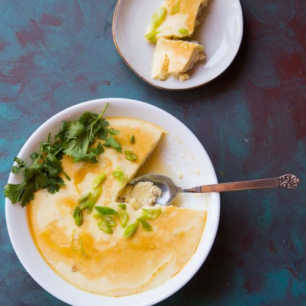
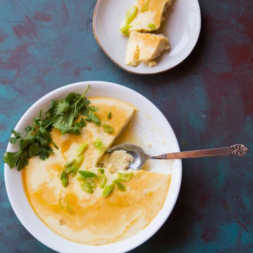

Receipes
Stewed Eggs with Minced Meat

If you need to whip together a meal in 30 minutes, but you also want something delicious and comforting, steamed egg with minced pork or any choice of meat is a simple recipe that you need to try. I found this receipe interesting and I look to try it one day.
Photo Gallery

 

Receipe
- Meat of Choice
- Soy Sauce
- Rice Cooking Wine
- Minced Garlic
- Freshly Grated Ginger
- White Pepper Powder
- Chinese Five Spice Powder (optional)
- Pinch of Salt
- Sugar
- Corn Starch
- 1 Scallion
- 4 Eggs
- ½ Cup Warm Water
Receipe Steps
- In a shallow bowl, mix ground pork with soy sauce, Shaoxing wine, garlic, ginger, white pepper powder, Chinese five spice, salt, sugar, and corn starch. Finally stir in chopped scallion and set it aside.
- Whisk eggs with ½ cup of water until smooth.
- Pour the egg mixture into a shallow bowl through a sift and then loosen and evenly distribute the pork a bit.
- In a pot with a lid, bring 3 cups of water to a boil over medium heat. Insert a steamer basket/rack into the pot and place the bowl on top. Reduce the heat to medium low and cover pot with lid, but leave a little opening and steam for 20-25 minutes or until the egg custard is set.
- Once it's done cooking, remove the pot from the heat and let it cool for 5 minutes before taking it out. Drizzle with a bit of sesame oil and serve with warm rice.
Zucchini Fritters

I found this recipe for zucchini fritters on a food blog when I was looking for quick and easy dishes to make during undergrad. It uses minimal ingredients and can be done in less than half an hour. They look delicious and filling and I can't wait to try them, especially with dipping sauces.
Photo Gallery


Receipe
- Zucchini
- Egg
- Flour
- Vegetable/seed oil
- Garlic
- Salt and Pepper
Receipe Steps
- Combine eggs, salt, and pepper and whisk.
- Add pressed garlic.
- Grate the zucchini and squeeze the moisture out of it.
- Add zucchini and flour and mix.
- Heat oil in pan and add dollops of batter.
- Serve with or without dipping sauce.
Homemade Mac & Cheese

Macaroni and cheese, commonly known as mac & cheese, is a comfort food staple that has captured the hearts of people all over the world. Originating from Europe and popularized in the United States, this dish consists of elbow macaroni pasta smothered in a creamy cheese sauce. The simplicity of its ingredients—pasta, cheese, and often a touch of butter or milk—belies a rich, complex flavor that has made it a favorite for both quick weeknight dinners and festive holiday gatherings.
Photo Gallery


Receipe
- Macaroni
- Butter and flour
- Milk
- Cheese
- Seasonings
- Bread Crumbs
Receipe Steps
- Preheat oven to 375°. Grease a 13"x9" baking dish with butter. In a large pot of boiling salted water, cook macaroni, stirring occasionally, until al dente, 5 to 6 minutes. Drain.
- In a large saucepan over medium heat, melt 1 stick butter. Sprinkle flour over and cook, stirring, until slightly golden, 2 to 3 minutes. Pour in milk and whisk until combined. Add mustard powder; season with salt and pepper. Bring to a simmer over medium-high heat and cook, stirring, until sauce starts to thicken, about 2 minutes.
- In a small bowl, combine panko, oil, and remaining 1/2 cup Parmesan. Sprinkle over macaroni; season with more pepper.
- Bake mac and cheese until bubbly and golden, 25 to 30 minutes. Let cool for 10 minutes.